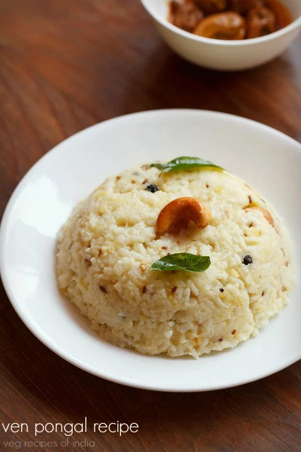
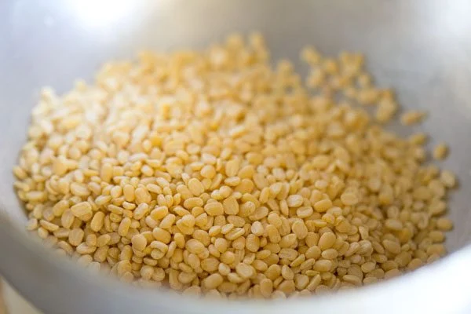
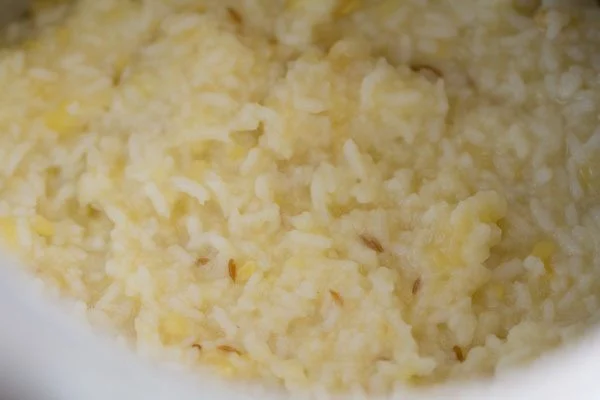
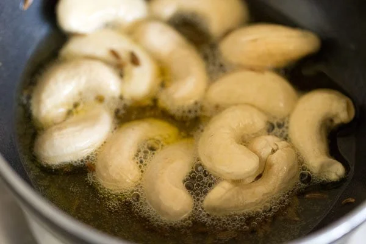
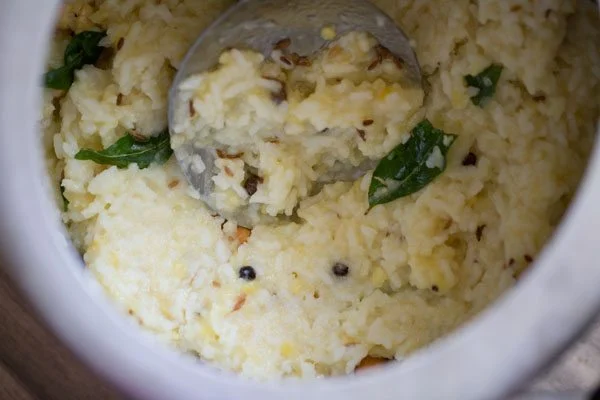

Ven Pongal Recipe | Khara Pongal | Ghee Pongal
Pongal is a delicious South Indian porridge like dish that is made with rice and yellow moong lentils. It can be made sweet or savory. Here I share the savory version of Pongal recipe known as Ven Pongal or Khara Pongal laced with the wonderful flavors of cumin, asafoetida, curry leaves, ginger and black pepper. Not to forget the lovely aroma of ghee, in it.
How to make Ven Pongal
Before you begin there is some quick prep work like roasting moong lentils and rinsing rice, lentils. Further on making khara pongal is a breeze. Wherever possible, I have mentioned tips and suggestions so that you make a perfect ven pongal.
Roast Moong Lentils
1. Pick ¼ cup of moong dal first to get rid of stones if any. Then heat a small pan or a small kadai and add the moong lentils.
2. On a low heat stirring often roast the moong lentils until they become fragrant.
3. You need to roast the moong lentils until they become fragrant. There is no need to brown them.
4. Take the roasted moong lentils in another bowl or you can use the same pan for rinsing.
5. Add ½ cup rice in the bowl containing the roasted moong dal. You can use any non-sticky short to medium grained white rice.
6. Rinse both rice and the roasted moong dal a couple of times with water.
Make Ven Pongal
7. Drain very well and then add them in a 3 litre stovetop pressure cooker.
8. Now add the following ingredients – ½ teaspoon cumin seeds, ⅛ teaspoon asafetida (hing), 1 teaspoon heaped chopped ginger. Add salt according to your liking.
9. Pour 3 to 3.25 cups water. The amount of water to be added depends on the consistency you want and on the quality of moong dal.
Usually I cook the moong lentils for 7 to 8 whistles. Thus I add 3.25 cups water. If you get moong dal, that cooks faster with 2 to 3 whistles, then add about 2.5 cups water.
10. Pressure cook on a medium to high heat for 7 to 8 whistles or 11 to 12 minutes. For moong dal which cooks quickly, you can pressure cook for 2 to 3 whistles.
11. Let the pressure settle down on its own in the cooker and then only you remove the lid to check the doneness and consistency.
Temper Pongal
12. In another small pan, heat 2 to 3 tablespoons ghee. 3 tablespoons ghee gives a good taste and flavor.
13. Add 1 teaspoon cumin seeds.
14. Let them splutter.
15. Then add 10 to 12 cashews.
16. Fry until the cashews start to become light golden.
17. Once they begin to get light golden, then add 1 teaspoon black pepper and 10 to 12 curry leaves.
18. Stir very well and fry until the curry leaves become crisp. The black pepper should also be fried well.
19. Now pour this entire tempering on the cooked rice and lentils.
20. Mix thoroughly.
21. Cover with the lid (with the vent weight/whistle on the lid) and set aside for 5 to 6 minutes.
This allows the tempering flavors to infuse with the khara pongal and the aroma to stay in. Then remove the lid and serve ven pongal hot or warm.